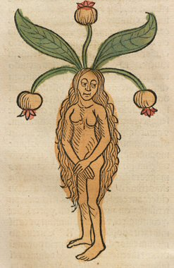

Friday, May the 6th, 2011
back to: title, date or indexes
Over at the super soaraway Dabbler this week I provide readers with some tips on how to make a homunculus. These miniature persons can be very helpful, if a bit eerie. Hooting Yard certainly couldn't cope unless we had a little band of homunculi scurrying about taking care of business and protecting us from harm.
